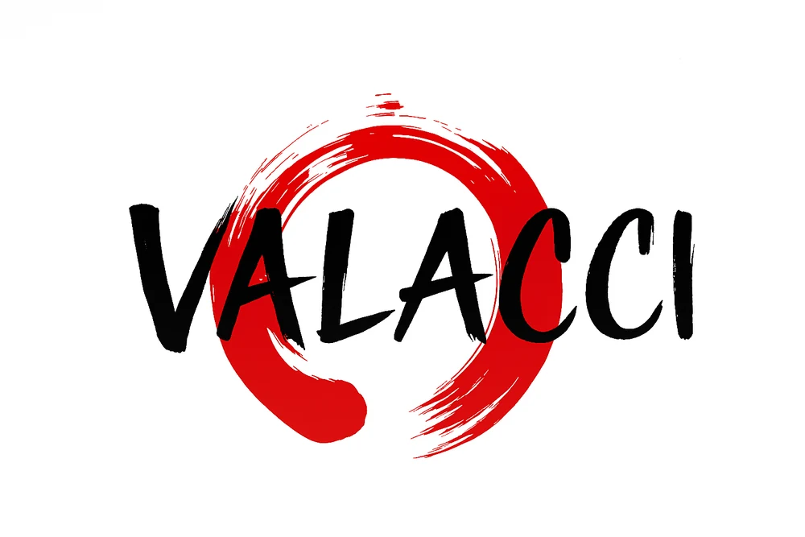

Valacci Star / Videoclip oficial
Gravedad Propia - Ian Valacci
El primer tema de Valacci Star. Identidad, confianza y superación en un videoclip de collage Y2K y anime.
Videoclip oficial · Ya disponibleVer videoclip en YouTubeHistorias, anime, tecnología y proyectos construidos a mi manera.
Ian Valacci es un creador de contenido peruano cuyo universo gira alrededor del anime, las historias, el entretenimiento, la tecnología y la construcción de proyectos propios.
Resúmenes, recomendaciones, manga, reacciones, cosplay y lives. Una mirada personal y una comunidad con la que compartir lo que voy descubriendo.
Ian Valacci02 / Videos & historias
El primer tema de Valacci Star. Identidad, confianza y superación en un videoclip de collage Y2K y anime.
Videoclip oficial · Ya disponibleVer videoclip en YouTubeMi contenido
Mi espacio principal para narrar anime: resúmenes, recomendaciones, historias y videos más largos.
Mi lado más directo: anime, cosplay, humor, comunidad y lives.
Historias, capítulos, opiniones y formatos espontáneos.
Otra forma de contar historias alrededor del anime.
VALACCI Academy y VALACCI Store: aprender, construir y dar forma a una identidad.
Anime / Storytelling
Uso una historia de anime para hablar de algo que yo también viví o aprendí.
Mi visión
No quiero limitarme a hacer videos. Quiero construir ideas, proyectos y experiencias alrededor de todo lo que voy aprendiendo: anime, tecnología, educación y negocios.
Mi camino / Etapas creativas
Contenido, comunidad y proyectos. Un recorrido que sigue abierto.
Contenido alrededor del anime.
Comunidad, TikTok, lives y nuevos formatos.
Storytelling, resúmenes y recomendaciones.
Tecnología, ideas y nuevas habilidades.
VALACCI Store y proyectos propios.
VALACCI Academy.
Continuar aprendiendo y construyendo.
03 / Proyectos
Aprender con anime: hábitos, mentalidad, edición y habilidades para convertir ideas en acciones. Evolucionar con ambición y paz interior.
Los detalles también hablan por ti. Mi marca de accesorios alrededor de identidad, estética alternativa y estilo.
Letras con intención: confianza, superación y gravedad propia. Mi primer tema ya está disponible.
Mi ecosistema / Valacci Star
Valacci Star es mi espacio musical: letras pensadas para acompañar tu mundo interior con mensajes de confianza, identidad y superación.
Canciones para recordarte lo que puedes construir, lo que atraes y esa gravedad propia que te mueve. Música con intención, desde mi universo creativo.
Proyectos abiertos / Valacci Comunity
Descarga el proyecto de Gravedad Propia y su prompt maestro. Reproduce el original o crea una versión con tu canción y tu personaje.
Entrar a Valacci Comunity ↗VALACCI ACADEMY / AMBICIÓN + PAZ
Academy es la rama educativa de mi universo: lo que aprendo, compruebo, documento y enseño.
Alto rendimiento es la capacidad de evolucionar sin perder la paz interior.
Uso el anime como método de enseñanza: historias y personajes de Blue Lock como punto de partida para trabajar hábitos, decisiones y mentalidad. También comparto edición y otras habilidades que desarrollo.
Una práctica inspirada en personajes como Noel Noa de Blue Lock: empezar el día preguntándote si la siguiente acción te acerca a tu meta.

DEL UNIVERSO DE IANIdentidad / VALACCI
Mi marca de accesorios, nacida del mismo universo creativo. Identidad, estilo y presencia: Y2K, gótico, punk y piezas que hablan por ti.
Experimento con tecnología, aprendo nuevas habilidades y pongo las ideas en práctica. Academy es donde documento ese proceso.
04 / El archivo
Aprender con anime: hábitos, mentalidad, edición y habilidades para convertir ideas en acciones. Evolucionar con ambición y paz interior.
Los detalles también hablan por ti. Mi marca de accesorios alrededor de identidad, estética alternativa y estilo.
Ian / Valacci
Anime. Historias. Identidad.